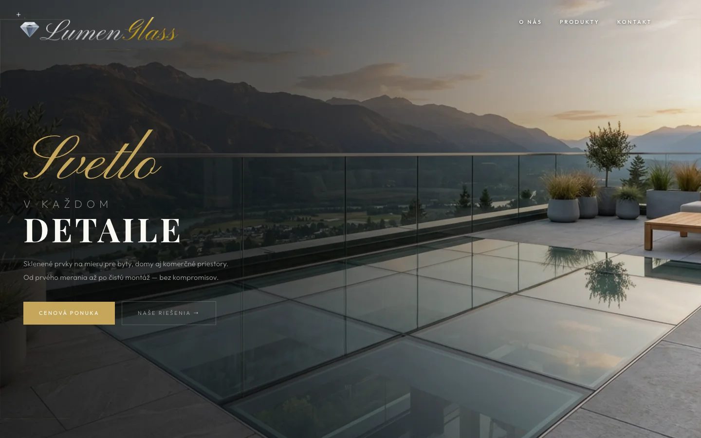
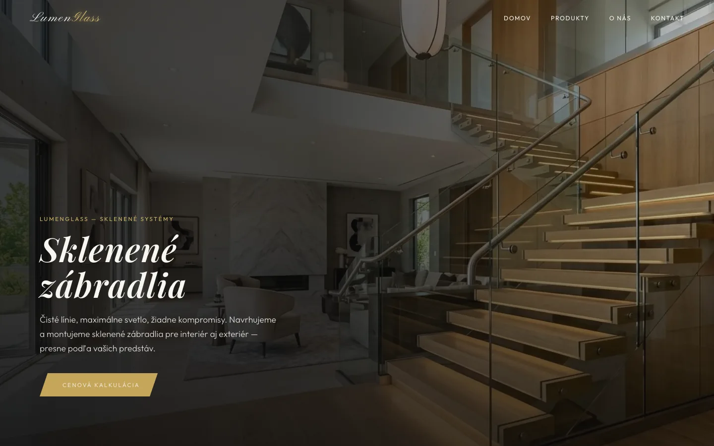
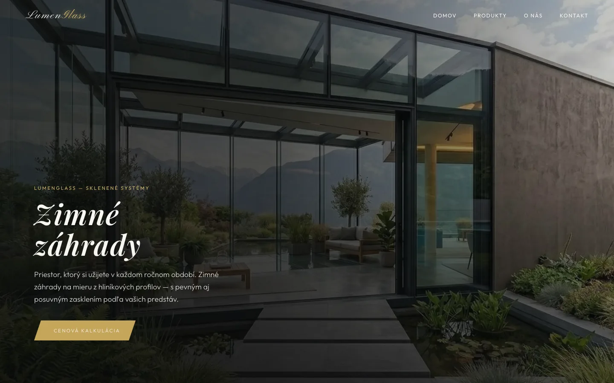
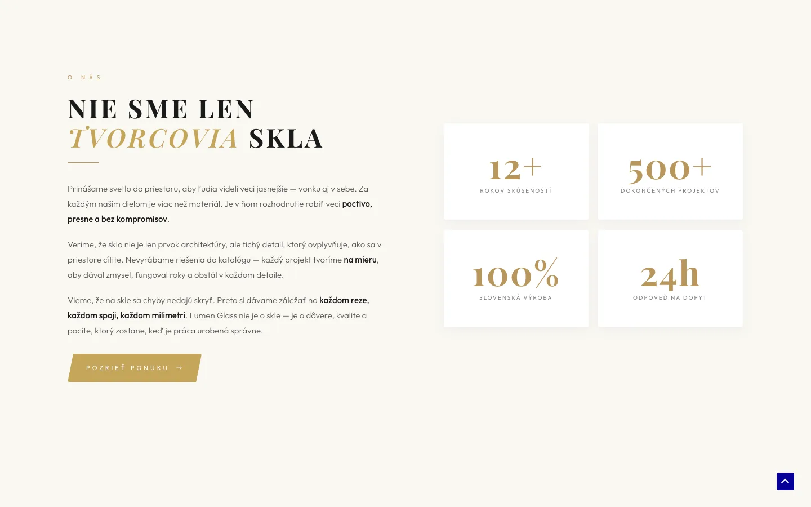
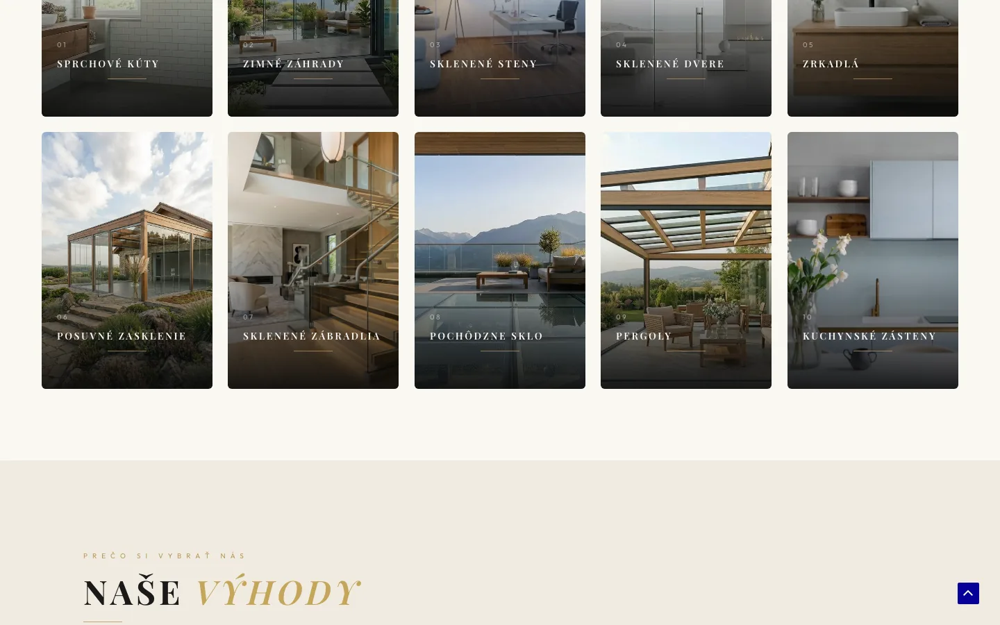

LumenGlass
Web, ktorý nepredáva sklo. Predáva dôveru.
Remeselná práca si zaslúži prezentáciu, ktorá jej zodpovedá.
LumenGlass je slovenská sklárska firma, ktorá vyrába zábradlia, dvere a celé sklenené plochy na mieru. Klient potreboval web, ktorý nebude pôsobiť ako stavebniny — ale ako interiérové štúdio. Web, ktorý jedným pohľadom povie „toto nie je lacné, ale toto je presné."
Sklenársky segment na Slovensku má problém: 90 % konkurencie má webovú prezentáciu na úrovni začiatku 2010-tych rokov — galérie bez kontextu, cenníky v PDF, nešifrované formuláre. LumenGlass chcel z tohto rámca vystúpiť.
Pôsobiť ako prémia v segmente, kde prémia neexistuje
Návštevník pochopí ponuku za 10 sekúnd
Klient vie obsah aktualizovať sám bez vývojára
Web rýchly na mobile — 90 % dopytov z mobilov
Tichý, kontemplatívny vizuálny jazyk.
Sklo je o svetle a tichu — tak musí pôsobiť aj web. Zvolila som paletu zlatej #C5A55A, krémovej #FAF8F3 a hlbokej čiernej #0A0A0A. Žiadne modré tlačidlá s odleskami, žiadne stockové fotky usmiatych pracovníkov.
Typografickú hierarchiu tvoria tri fonty — Pinyon Script pre logotyp a slová ako „Svetlo", Playfair Display pre vážne nadpisy a Outfit pre čistý body text. Nehádajú sa, ale vytvárajú vrstvený charakter.


Vlastný plugin namiesto klikania v Elementore.
Namiesto štandardného Elementor prístupu som napísala vlastný PHP plugin — LG Write — ktorý ťahá widgety zo súborového systému a pushuje ich do Elementor JSON-u v databáze. Aktualizácia 10 podstránok naraz = 5 sekúnd.
Custom PHP plugin
LG Write — push obsahu do Elementoru programaticky. Žiadne ručné klikanie na 10 podstránkach.
6 custom widgetov
Hero, O nás, produktový grid, výhody, kontakt, footer — všetko písané ručne v HTML/CSS.
Performance tuning
WebP konverzie, fetchpriority="high", preconnect na Google Fonts, deferred loading.
10 produktových podstránok
Každá vlastná PHP template s plnou SEO sadou. Všetky indexované v Google.


Web spustený. Klient sebestačný.
Web beží živý na lumenglass.sk. Klient si vie obsah aktualizovať sám cez WordPress admin bez pomoci vývojára. Všetkých 10 podstránok je plne indexovaných v Google.
Výsledok nie je len funkčný web — je to vizuálna identita, ktorá hovorí tým správnym zákazníkom: „Toto je firma, ktorej môžeš zveriť svoju terasu."
Hľadáte rovnaký prístup k webu pre vašu firmu?
Napíšte mi →